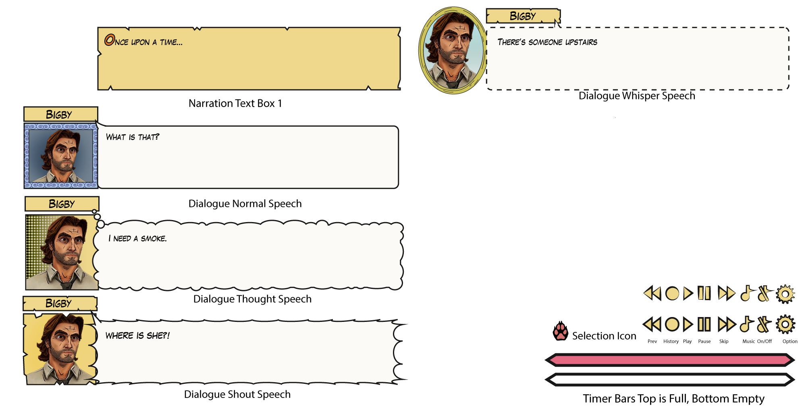

UX Design
Problem
When creating UIs for a game, it involves research on the game they’re making and understanding the style the game is going for. I’ve included two different game UI that I created tests for below. One was for a visual novel game in the style of a comic book. The other was for a cartoon style mining game.
Insight
In the visual novel game, I did research on some classic comic book looks. The color theme of yellow became apparent very quickly, along with asymmetric lines and the use of dot textures.
With the mining game, keeping with the cartoon look became key.
Approach
I created several iterations of UIs possible for the visual novel game. I made sure to include text boxes that invoked different emotions and functions. I also included various styles of line work and image boxes for the client to choose from.
For the mining game, I kept with a cartoonish look to create a UI that resembled rock or gems. These more finished versions were after I had created several sketches for the client to nail down the image they were thinking of.
Solution
By creating several styles I was able to better understand what the client was looking for in each instance. I used Adobe Illustrator for both games, which allows for quick adjustments and better use for in-game functions.
Result/Outcome
As a whole, these turned out really well. I was able to capture the direction and core style of the games the client was looking for.

